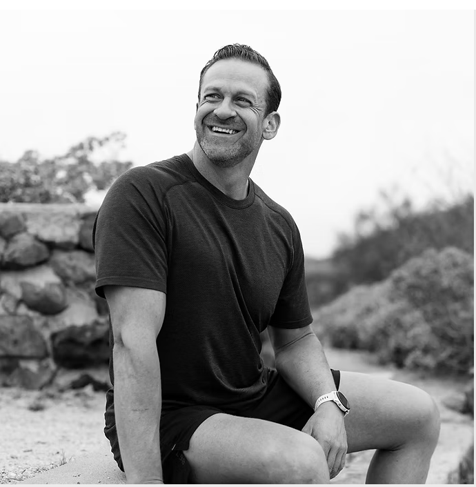
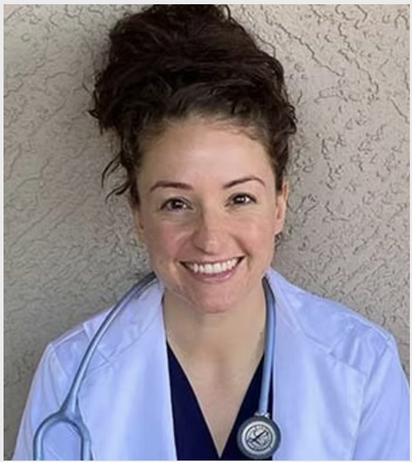
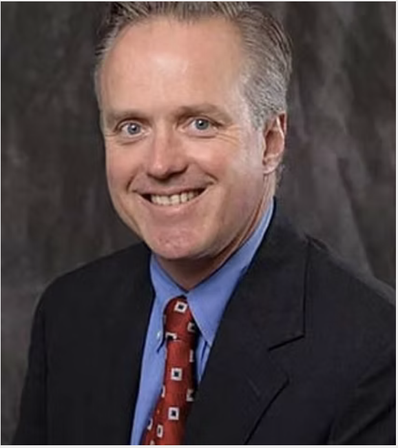
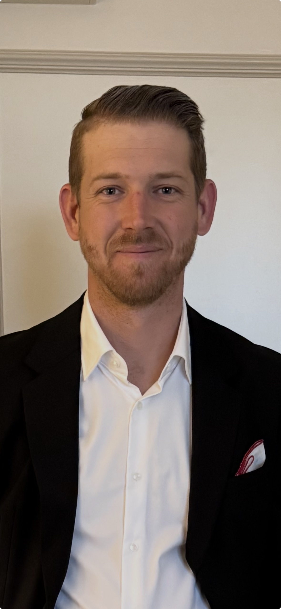

Barbell Saves Project is led by people with a personal stake in recovery — founders, clinicians, peers, and community leaders united around a single belief: that movement, community, and purpose save lives.

The Barbell Saves Project exists because of Rob Best. A person in long-term recovery himself, Rob understood firsthand what was missing from the recovery landscape — not more clinical programs behind closed doors, but a community-rooted movement built on fitness, accountability, and belonging.
Where others saw a gap, Rob saw a gym floor. He built Barbell Saves Project from the ground up — developing the programming model, forging the partnerships, opening the recovery houses, and recruiting the people who share his conviction that the barbell saves.
Under Rob's leadership, the organization has grown from a single community class to a full ecosystem of care: four recovery houses, free daily programming, twenty-plus partner organizations, and thousands of lives touched across the Phoenix metro area.
"This wasn't built around a business plan. It was built around people who needed something that didn't exist yet. We just decided to build it."
Rob leads every aspect of the organization — from day-to-day operations and community outreach to fundraising and strategic growth — with the same intensity he brings to the gym floor.
Our clinical programming is overseen by a licensed clinical social worker with deep expertise in behavioral health, trauma-informed care, and addiction recovery — ensuring every program we run meets the highest standard of evidence-based practice.
Our board brings together clinical expertise, financial leadership, peer-lived experience, and community influence — all in service of the mission.

A doctoral-prepared nurse practitioner with dual certification in family and emergency medicine. Hayley brings deep clinical expertise to the board, helping ensure that the organization's programming reflects current evidence-based practice in behavioral health and recovery medicine.

A seasoned financial executive with a career in corporate leadership at Boeing, Bob brings the financial discipline and strategic rigor of a Fortune 500 CFO to the Barbell Saves Project. His oversight ensures the organization operates with the transparency and fiscal responsibility our donors and community deserve.
A certified public accountant who brings both professional financial expertise and the perspective of lived recovery experience. Nate's dual role as a peer and CPA gives him a uniquely grounded understanding of what the mission requires — and what it actually costs.
A real estate professional and person in recovery, David contributes both his industry expertise and his personal connection to the work. His knowledge of the Phoenix housing market is a direct asset in sustaining and expanding the organization's recovery house portfolio.

A director at DraftKings and person in recovery, Jordan brings corporate operations experience and a passion for community to the board. His background in scaling programs and building teams within a major sports entertainment company informs how Barbell Saves approaches growth and organizational development.
A person in recovery who brings the most essential perspective to the board — that of someone who has lived the journey this organization exists to support. Brandi's voice ensures the community we serve remains at the center of every decision we make.
Community leaders, clinicians, and executives who bring their expertise, networks, and advocacy to the mission.
Whether you want to donate, partner, volunteer, or just show up — there's a place for you in this movement.